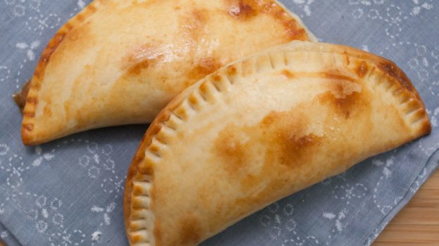

PASTEL CAPRESE
Ingredientes
Massa
- 250 gramas de farinha de amêndoas
- 200 gramas de creme de leite
- sal a gosto
Recheio
- 6 colheres de sopa de tomate picado sem sementes
- 4 fatias de queijo muçarela
- Folhas de manjericão à gosto
Modo de preparo:
- Coloque a farinha em um recipiente e faça um buraco no meio, despeje o creme de leite e uma pitada de sal.
- Misture a massa primeiro com uma colher, depois com as mãos até que não grude mais nas mãos e fique lisa. Reserve.
- Espiche a massa e corte em formato redondo, igual massa de pastel.
- Para o recheio, misture o tomate, o queijo picado ou em cubos e folhas de manjericão picadas.
- Coloque uma porção de recheio sobre cada disco de massa, dobre ao meio e feche apertando as bordas com um garfo. Se quiser pode bater uma gema de ovo com um fio de azeite e pincelar em cima de cada pastel antes de assar.
- Asse no forno (200oC) por 30 minutos ou até que a massa doure.
Rendimento:
10 unidades
Home